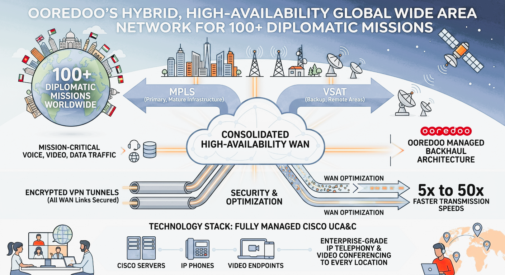

Opportunity: Qatar's Ministry of Foreign Affairs sought a trusted partner to design and
deliver a secure, unified communications network connecting over 100 diplomatic missions across the globe —
carrying classified voice, video, and data traffic for one of the region's most strategically sensitive
government portfolios. The program demanded sovereign-grade security, carrier-class reliability, and
seamless coordination across dozens of countries simultaneously.
Ooredoo Qatar, as the nation's leading telecom operator and a trusted government partner, was selected to
lead
this complex, mission-critical undertaking end-to-end.
Served as Program Director with full commercial, delivery, and relationship accountability for a $50M mission
critical
program for the State. Led a team of 8 direct reports — spanning project management, network engineering,
logistics, and
partner governance — and an extended delivery team of 25+ across internal functions and international partner
organizations including SITA and PCCW.
Held the primary executive relationship with senior stakeholders at both the State and Ooredoo leadership,
navigating the dual demands of political sensitivity at the State level and technical rigour at the
operational level throughout the program lifecycle.
Solution: Ooredoo engineers designed a hybrid, high-availability Wide Area Network connecting
100+ diplomatic missions worldwide, built on a combination of MPLS and VSAT technologies to ensure resilient
connectivity regardless of local infrastructure maturity. The solution consolidated mission-critical voice,
video conferencing, and data traffic across a single, centrally managed backhaul architecture.
The technology stack included a fully managed Cisco Unified Communications and Collaboration suite —
encompassing servers, IP phones, and video endpoints — delivering enterprise-grade IP Telephony and Video
Conferencing to every diplomatic location. All WAN links were secured with encrypted VPN tunnels, and WAN
Optimization technology was deployed across the hybrid infrastructure, achieving transmission speed
improvements of 5x to 50x depending on link conditions.

Sanitized for portfolio use.
Stakeholder & Relationship Management: Maintained ongoing executive alignment with
both Ministry-level sponsors and CIO/CTO counterparts, managing a dual stakeholder dynamic where political
priorities and technical requirements had to be reconciled continuously. Facilitated all major governance
reviews, design sign-offs, and escalation resolution directly with customer leadership, ensuring trust was
preserved throughout a multi-year engagement.
Program Governance: Established the full governance framework from the outset —
directing the development of the Project Implementation Plan (PIP), Statement of Work (SOW), Assumptions
Register, Design and Test Plans, and the User Acceptance Test (UAT) Plan. Enforced structured customer
review and approval gates at each phase, eliminating ambiguity and protecting both delivery timelines and
commercial terms.
Partner & Vendor Ecosystem: Forged and managed strategic partnerships with SITA and
PCCW as primary global delivery partners, alongside local system integrators across target regions.
Maintained rigorous partner governance cadences to ensure accountability, quality, and schedule adherence
across a geographically dispersed delivery network.
Global Logistics & Risk Recovery: Managed complex end-to-end global logistics across
100+ international sites, including equipment staging, quality assurance testing, customs clearance, and
coordination of site access and infrastructure readiness. When customs delays in multiple jurisdictions
threatened to disrupt the deployment schedule, led a rapid resequencing of the rollout plan —
reprioritizing sites where clearance had been obtained and accelerating parallel workstreams — recovering
the program timeline without impact to the overall delivery commitment.
Commercial & Scope Discipline: Maintained disciplined change control throughout the
program, rigorously evaluating all scope variations against contractual baselines and negotiating
appropriate commercial treatment where required. This approach, combined with operational governance across
the partner network, delivered a 3% improvement in profit margin during program execution
— equivalent to approximately $1.5M recovered against the original program economics.
Team Leadership: Led and developed a cross-functional team of 8 direct reports across
project management, engineering, and logistics disciplines, with accountability for performance, workload,
and professional development throughout the program. Coached junior PMs on governance practices and
structured delivery methodology, several of whom progressed to senior roles following program
completion.
100+
Diplomatic Locations
+3%
Profit Margin Improvement